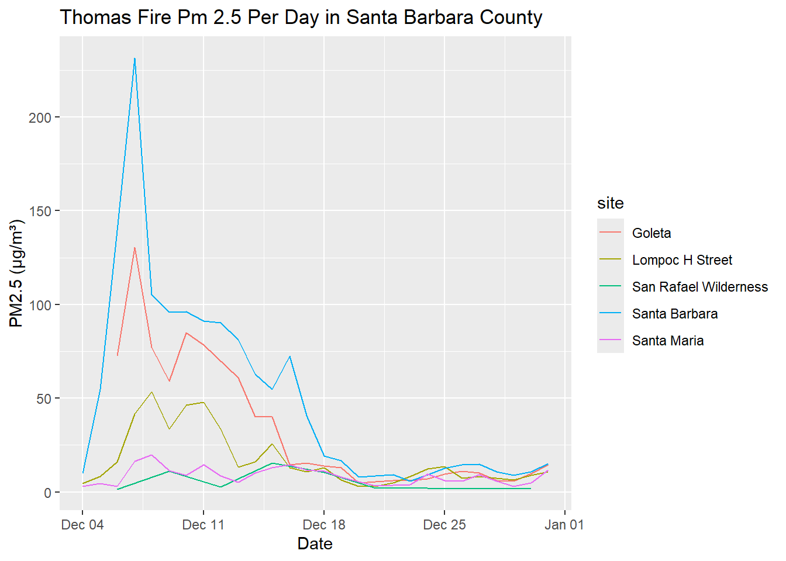
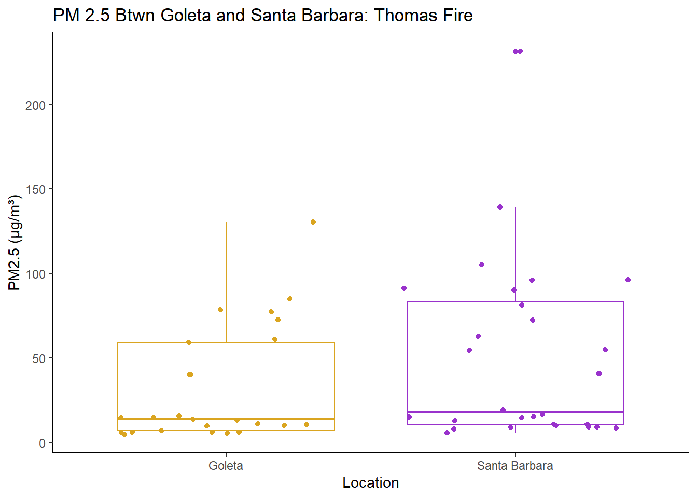
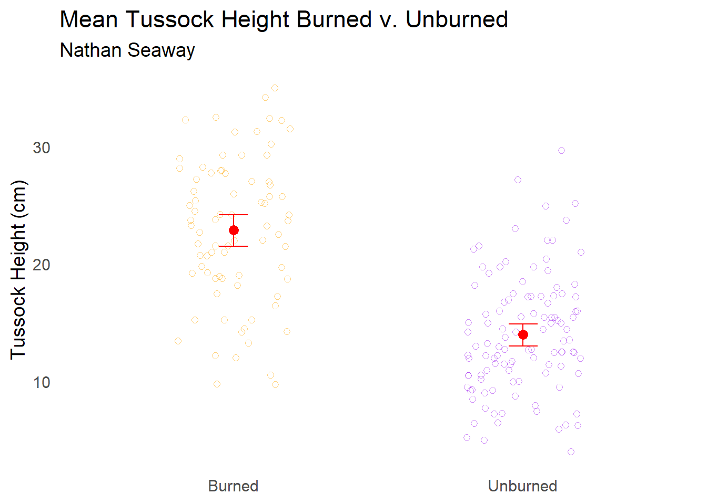
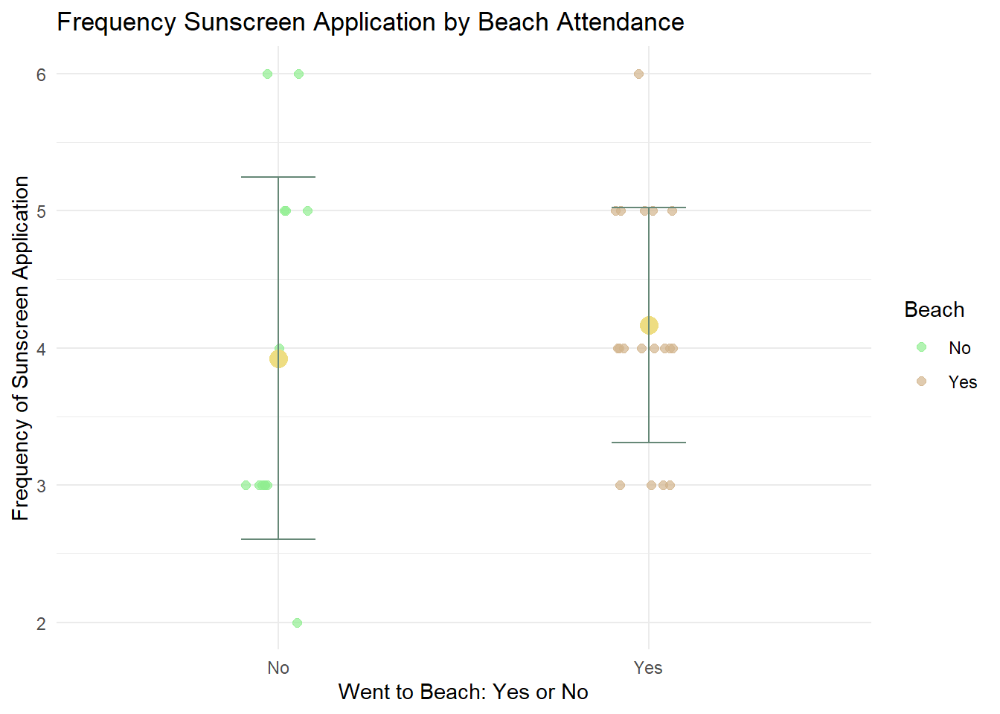

Below are some figures and data visualizations I created for a data science in Environment Studies class (Env S 193DS).
Thomas Fire Visualization
The code below creates visualizations from a data set concerning particulate matter from the Thomas Fire in Santa Barbara County. The first figure displays the data by location over time. The second figure displays a box plot comparing the particulate matter differences between Santa Barbara and Goleta, Ca. This is adapted from homework 2.
library(tidyverse)library(janitor)sbpm <-read_csv("sbpm.csv")ggplot(sbpm, aes(x=date, y=pm2_5, color=local_site_name))+geom_line() +labs(title="Thomas Fire Pm 2.5 Per Day in Santa Barbara County",x="Date",y="PM2.5 (µg/m³)",color="site")

gol_sb <- sbpm %>%filter(local_site_name =="Santa Barbara"| local_site_name =="Goleta")ggplot(gol_sb, aes(x=local_site_name, y=pm2_5, color=local_site_name))+geom_boxplot()+geom_jitter(h=0)+labs(title="PM 2.5 Btwn Goleta and Santa Barbara: Thomas Fire",x="Location",y="PM2.5 (µg/m³)")+scale_color_manual(values=c("Goleta"="goldenrod", "Santa Barbara"="darkorchid"))+scale_shape_manual(values=c("Goleta"=15,"Santa Barbara"=17))+theme_classic()+theme(legend.position ="none")

Tussock Growth in Alaska Visualization
The code below attempts to replicate a figure from a paper by Rocha, A. et al. 2021 given a data set. It concerns tussock height between burned and unburned areas around the Anaktuvuk river in Alaska. It is derived from the midterm assignment for this class.
library(tidyverse)library(janitor)library(dplyr)#install.packages("gt")library(gt)#install.packages("effsize")library(effsize)tussocks_clean <-read.csv("2016ARFTussockHeight.csv")|>#reads the csv folder and names it tussocks_clean |> clean_names()|>#changes column names to underscored and lower casemutate(site =recode(site, "Sev"="Burned", "Unb"="Unburned"))|>#changes names of values from sev and unb to burned and unburned respectively select(site, average_moss_cm) # removes columns except site and average_moss_cmtussocks_summary <- tussocks_clean |>#renames tussocks_clean to tussocks_summarygroup_by(site) |># takes site data and groups it together by locationsummarize(mean_moss_height =mean(average_moss_cm), #creates new column label called mean_moss_height and says it is the mean of the values in the column average_moss_cm.stand_dev =sd(average_moss_cm), #creates new column label called stand_dev and says it is the standard deviation of the values in the column average_moss_cm.stand_err =sd(average_moss_cm)/sqrt(n()),#creates new column label called stand_err and says it is equal to the standard deviation of average_moss_cm divided by the square root of the number of values in that data set (standard error). ggplot2::mean_cl_normal(average_moss_cm)) #creates new columns that are the confidence interval values of the mean of average_moss_cm.tussocks_summary <- tussocks_summary |>select(site, mean_moss_height, stand_dev, stand_err, ymin, ymax) #selects only the columns listed above to remain in the data set (removes the mean from the confidence interval). tussocks_summary <- tussocks_summary |>mutate(across(where(is.numeric), ~round(.x, 1))) #rounds numerical values to the ones value place, by mutating it. ggplot(data = tussocks_clean, aes(x = site, y = average_moss_cm, color = site))+#constructs a ggplot graph using the data frame tussocks_clean with the x axis showing site, y the average_moss_cm value, and the color of points on this graph being related to site value. geom_jitter(width =0.2, shape =1, alpha =0.5, size =2, show.legend =FALSE)+# uses the geometry of a jitter plot to display the data with the size shape etc having corresponding sizes/values and the legend not appearing geom_point(data = tussocks_summary,aes(x = site, y = mean_moss_height),shape =21, fill ="red", color ="red", size =3, inherit.aes =FALSE)+#adds a singular point that uses data from this frame and the same aesthetics as above that is red colored that displays the mean of the data set. geom_errorbar(data = tussocks_summary,aes(x = site, ymin = ymin, ymax = ymax),width =0.1, color ="red", inherit.aes =FALSE) +theme_minimal(base_size =14)+#creates error bars around this mean point created above by displaying the error around the mean, also colored red. theme(panel.grid =element_blank(),panel.background =element_rect(fill ="white", color =NA),plot.background =element_rect(fill ="white", color =NA),legend.position ="none" )+#makes aesthetic changes to the plot removing grid lines and backgrounds for the panel and the plot; it also removes the legend. labs(x =NULL,y ="Tussock Height (cm)",title ="Mean Tussock Height Burned v. Unburned",subtitle="Nathan Seaway")+scale_color_manual(values =c("Burned"="orange", "Unburned"="purple")) #creates labels for this graph for the x, y, title, and subtitle. It also programs the colors for the site values.

Figure 3. Burned Areas tend to have larger Tussocks.
Data from ‘2016ARFTussockHeight_csv’ package (Rocha, A. 2021), accessed May 2025. Points represent observations of Tussock height (cm) in burned and unburned areas of Anaktuvuk River area (total n=190). Colors represent different sites (orange: burned, purple: unburned). Graph also displays mean and variance of Tussock height for each area (red circles).
Sunscreen Usage Visualization
The code below comes from personal data I collected attempting to visualize differences in my own sunscreen usage in relation to going to the beach. I collected data for this project over several weeks, and created a basic data visualization using R. I then created an artistic affective visualization of this data using sunscreen bottles, which you can see below.
library(tidyverse)library(here)library(gt)library(flextable)library(janitor)library(readxl)library(dplyr)library(ggplot2)sunscreen <-read.csv("sunscreen_fix.csv")sunscreen <-select(sunscreen, -Date, -Steps._Day, -Days._Spring, -Max._UV, -Max._Temp) #removes all variables besides suncreen application amount and beach attendance from file.sunscreen <- sunscreen %>%mutate(Beach =recode(Beach, "Y"="Yes", "N"="No")) #changes names of variable from y and n to yes and no.# Create summary with lowercase namessunscreen_summary <- sunscreen %>%group_by(Beach) %>%#groups data by beach attendance. summarise(mean =mean(Frequency_Sunscreen_Application),sd =sd(Frequency_Sunscreen_Application) #finds the means and standard deviation of sunscreen application by this grouping. )# Plot(ggplot(sunscreen, aes(x = Beach, y = Frequency_Sunscreen_Application, color = Beach)) +geom_jitter(width =0.1, height =0, size =2, alpha =0.7) +scale_color_manual(values =c("No"="lightgreen", "Yes"="tan"))+#plots beach attendace on x and number applications on y; sets size and appearance/color of data points.geom_point(data = sunscreen_summary, aes(x = Beach, y = mean),color ="lightgoldenrod", size =4, inherit.aes =FALSE)+#makes the mean points appear on graph geom_errorbar(data = sunscreen_summary,aes(x = Beach, ymin = mean - sd, ymax = mean + sd),width =0.2, color ="#687", inherit.aes =FALSE)+#adds error bars of means to graph. labs(title ="Frequency Sunscreen Application by Beach Attendance",x ="Went to Beach: Yes or No",y ="Frequency of Sunscreen Application" )+#makes the labels of the graph.theme_minimal())#sets the theme of the graph

Figure 1. Distribution and means of frequency of sunscreen application by attendance to the beach (yes or no). Green points represent sunscreen application frequency for days where beach was not attended; brown to days where it was. Graph displays means and standard deviations of sunscreen application for both groups. Data from “sunscreen_fixed.csv” by Nathan Seaway from personal experience.